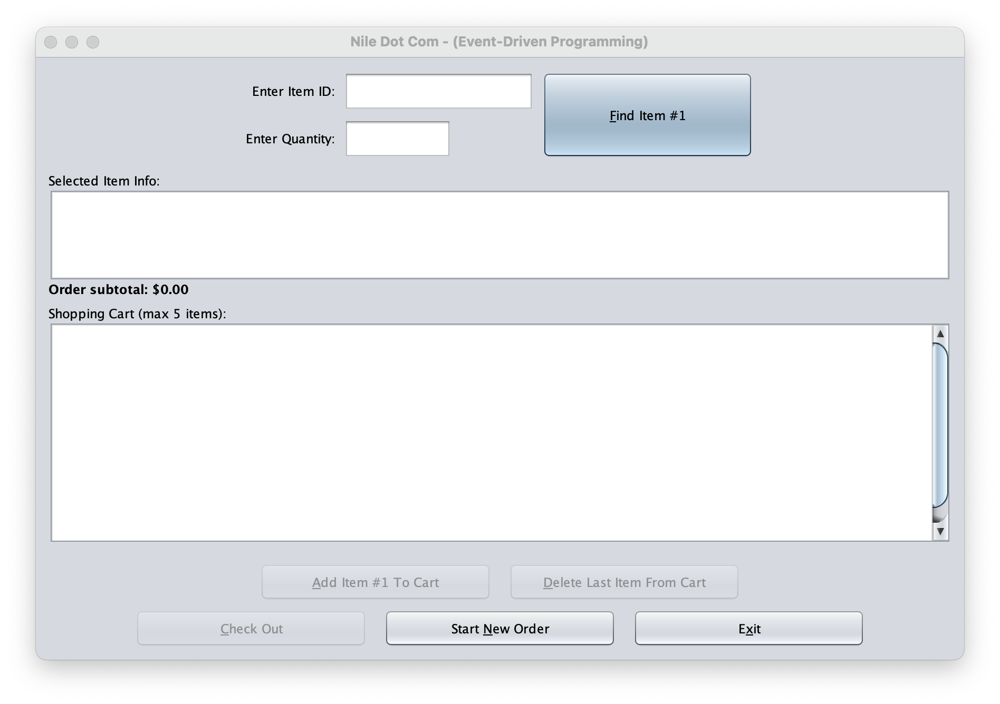

Project Description
This project is a standalone Java GUI application that simulates an online store workflow. The program loads inventory data from a CSV file, supports searching for items, and allows a user to add items to a cart. It calculates totals (including tax), generates an invoice during checkout, and appends completed purchases to a transactions log using a unique transaction ID.
Skills Learned / Used
- Event-driven programming with Java Swing (buttons, handlers, and UI workflow)
- File I/O for reading inventory data from a CSV file
- Cart logic (adding items, tracking quantities, and calculating totals)
- Generating an invoice with tax and writing transaction logs to a CSV file
- Input validation and clear user feedback through the GUI